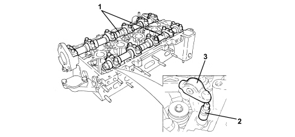

INTRODUCTION - TIMING SYSTEM
- Path
- Descriptions > 10 ENGINE > 1036 TIMING SYSTEM > INTRODUCTION - TIMING SYSTEM
- Kind
- system description
- Applies to
- engines: 2.2; all production periods
- Interactive page
- https://sloeber94.github.io/elrnDB-fCrm/en/#/194002109
Applies to: engines: 2.2; all production periods
SPECIFICATIONS
Timing system with two overhead camshafts operated by a chain, four valves per cylinder, hydraulic tappets with roller drive levers.

1. Camshafts
2. Hydraulic tappets
3. Rocker arms